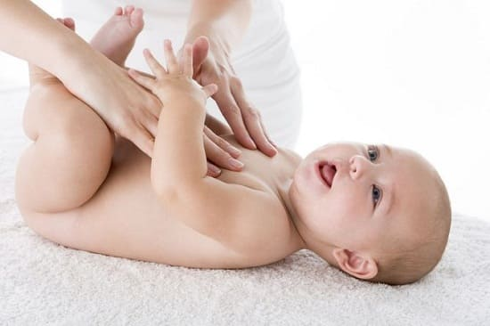

Существуют два механизма попадания газа в организм ребенка: заглатывание слишком большого количества воздуха во время кормления и выработка слишком большого количества кишечного газа время переваривания. Дегазация ребенка должна сопровождаться ослаблением этих двух источников газа. Вот как это можно сделать.
Уменьшить количество заглатываемого воздуха во время кормления грудью. Чтобы убедиться, что у ребенка хороший захват, можно слегка пощекотать его губы — это вынудит «его широко раскрыть рот, что позволит как можно больше захватить околососковый кружок — ареолу. Чем больше околососкового кружка он захватит, тем меньше воздуха он, скорее всего, заглотит.
Устраните из меню продукты, вызывающие беспокойство. Хотя не существует научного подтверждения того что употребление некоторых продуктов кормящей матерью вызывает усиленное образование газов у ребенка, но мамы уверены, что это имеет значение. В «черный список» попали; молочные продукты, брокколи, капуста, пшеница, кукуруза и продукты с высоким содержанием кофеина.
Уменьшите количество заглатываемого воздуха при кормлении из бутылочки. Убедитесь, что губы ребенка расположены высоко на основание соски, а не на кончике. Наклон бутылочку на 45 градусов вовремя кормления, чтобы воздух поднялся ко дну бутылочки. Перед кормлением переверните бутылочку и пре дите, чтобы воздух вышел из соски.
Как можно скорее реагируйте плач ребенка. Дети заглатывают много воздуха, когда слишком сильно плачут. Если ваш ребенок склонен к газообразованию, без промедления реагируйте на его плач. Но, конечно, не стоит бежать к нему из-за каждого «хныка».
Попробуйте различные положения для срыгивания. Путем проб и ошибок вы поймете, какие положения помогают выпустить почти весь воздух.
СОВЕТ ДОКТОРОВ СИРС: УНИВЕРСАЛЬНОЕ ЛЕКАРСТВО ДЛЯ КИШЕЧНИКА Запомните наше правило «двоек», применимое для любого кишечного расстройства, включая образование газов: кормите ребенка порциями в два раза меньше, но в два раза чаще. Когда пища поступает в кишечник меньшими порциями, но чаще, она лучше переваривается, поэтому остается меньше непереваренных остатков, которые могли бы забродить и образовывать газы. |
Помогайте газам выходить. Попробуйте положение, которое мы называем «газовая помпа». Положите младенца спиной к себе на колени; так чтобы его ноги были обращены к вам голова лежала у вас на коленях. Двигайте его ногами вверх и вниз, как при езде на велосипеде, сопровождая это выразительными гримасами также можете попробовать убывание под животик. Положите скатанную пеленку или бутылку с теплой водой (не горячей!), завернутую в пеленку, под животик младенца время приступа болей из-за газов. Чтобы лучше расслабить напряженный животик, положите ребенку животом на подушку так, чтобы ноги свисали с краю, и поглаживайте спине.
Попробуйте массаж живота «I love you» (я люблю тебя). Положите ребенка на спину на пол и сядьте на колени у его ног. Нежно проведите рукой вниз, рисуя букву «I» по левой стороне животика ребенка, таким образом вытесняя газ вниз и выгоняя его из нисходящей ободочной кишки. Затем нарисуйте перевернутую букву «L, означающую слово «Love» (люблю), продвигая газ вдоль средней части животика и вниз по левой стороне. Наконец, изобразите полную перевернутую букву «U», означающую «you» (тебя), гладя вдоль правой стороны животика ребенка через среднюю часть и вниз вдоль левой стороны. Позаботьтесь о том, чтобы у вас были теплые руки.
Избавьте ребенка от газов в пенной ванне. Делайте массаж животика ребенка, когда вы сидите с ним в ванне и его напряженный животик погружен в теплую воду. Вы заметите, как на поверхности будут появляться пузырьки газа.
Здоровье ребенка от докторов Сирс / Сирс У. и др.